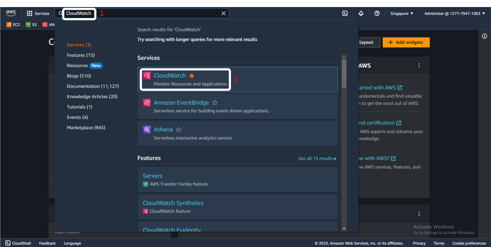
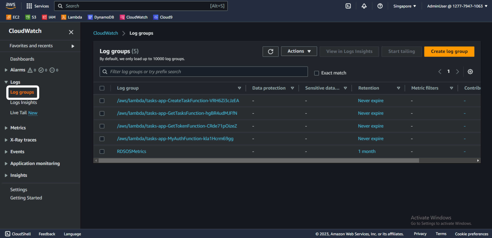
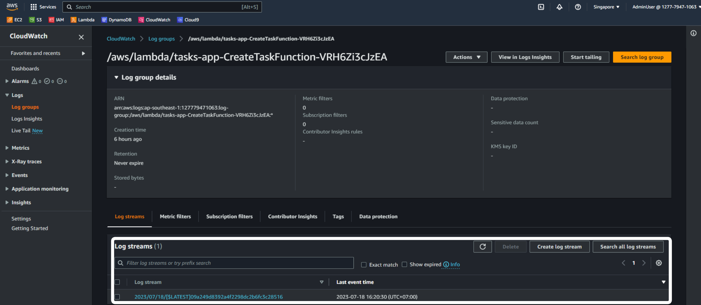
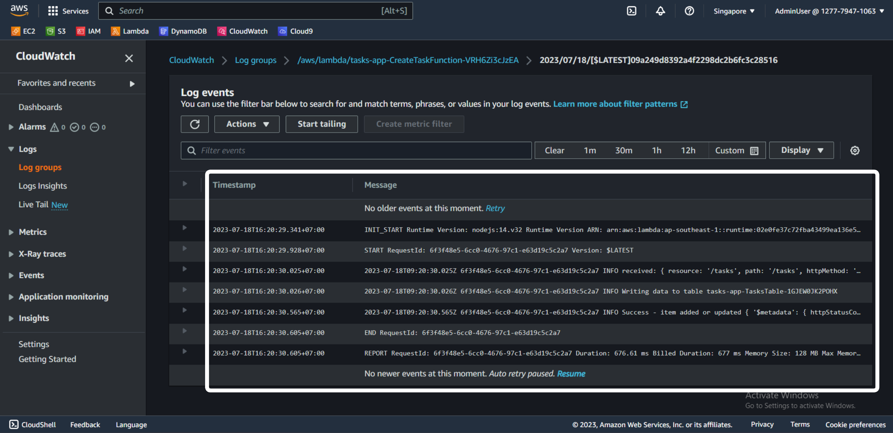
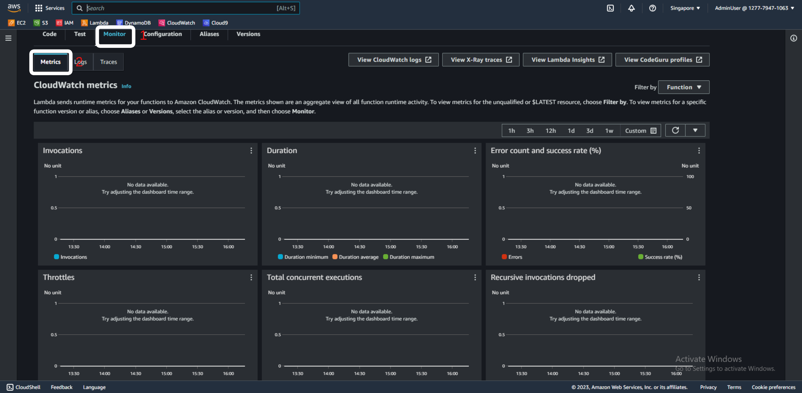

Centralized logging gives us two important benefits. First, the logged logs are stored in a single place and formatted according to a certain standard, making it simple to manage tasks and analyze logs. Second, it provides us with a safe place to store the data of our logs.
In AWS Lambda, the default logging service is Amazon CloudWatch.
Lambda automatically passes information about function calls, along with logs and output from our functions’ code, to CloudWatch Logs.
Log groups are a standard part of CloudWatch and are used to categorize logs. Any logs generated by a Lambda function have a naming convention of /aws/lambda/function-name. A log group is a collection of log streams, which you can view in detail in the CloudWatch console.



Each instance of a Lambda function has its own stream log. If a function is extended, the new version also has its own log stream. Every time an environment is selected for execution and a new environment is created to accommodate a certain amount of invocation and it creates a new log stream. How to name the log streams YYYY/MM//DD [Function version] [Execution environment GUID]
For example, here is the log stream of the CreateTaskFunction function.

In these logs there are:
Metrics are metrics data at different time intervals (time series data) and service-level metrics (request rate, error rate, duration, CPU, etc). Lambda automatically publishes a set of metrics for Lambda functions.
To track and observe Lambda functions, the most important metrics are:
All Lambda functions automatically integrate with CloudWatch. Lambda automatically records many metrics, it is always published to CloudWatch metrics. If you direct to a function in Lambda, the Monitor section of the Metrics section gives us a quick look at the CloudWatch metrics integrated with a function.
To access the Monitor, go to the Lambda console, select the Lambda function you want to view. In the Monitor, tab in the Metrics section, we can see the metrics of the function. See illustration in the picture below.

Next, we’ll add new functionality to our web application with Amazon Rekognition.